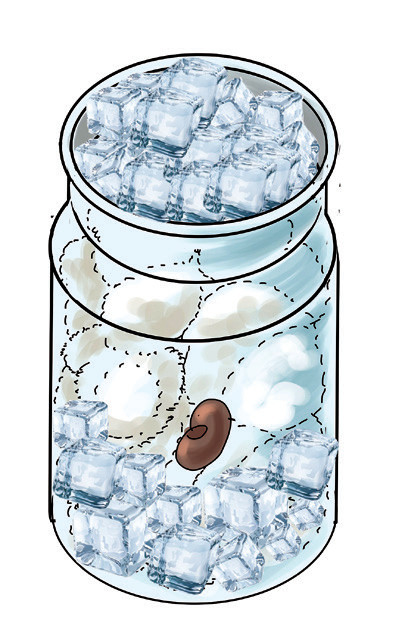
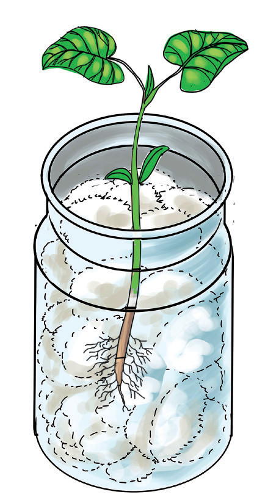

6. Chunguza bilauri au chupa hizo mbili kwa muda wa wiki moja mpaka mbili. Angalia Kielelezo namba 2.


Kielelezo namba 2: Umuhimu wa joto katika uotaji wa mbegu
Matokeo: Je, ni katika bilauri au chupa ipi mbegu ilichelewa kuota? Kwa nini?
Hitimisho: Andika hitimisho la jaribio ulilolifanya.
Jaribio la 3: Kuchunguza umuhimu wa mwanga kwa mimea
Lengo: Kuonesha kuwa mwanga ni muhimu kwa ukuaji wa mimea
Vifaa: Mbegu za maharage, makopo 2, udongo, maji, na boksi
Hatua
1. Chukua mimea miwili yenye afya na iweke kwenye makopo mawili tofauti.
2. Andika herufi A kwenye kopo la kwanza na herufi B kwenye kopo la pili. Angalia Kielelezo namba 3.
3. Weka mmea wa kopo A kwenye jua na mmea wa kopo B katika boksi lisilopenyeza jua.
4. Mimea yote imwagiliwe maji kwa muda wa wiki moja.
5. Baada ya wiki moja toa mmea katika kopo B ndani ya boksi.